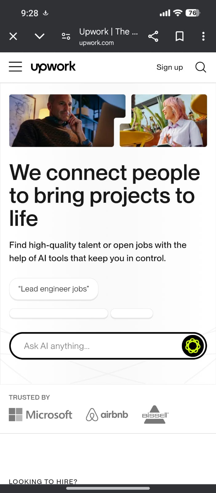

Upwork
Upwork is freelance platform. They can get paid on an hourly basis, and many people also secure permanent jobs, depending on their work quality. The way freelancers present their work to clients is crucial; providing good work and uploading appealing gigs can significantly impact their success. Titles and categories are very important, and paying attention to them can help attract more clients.
Upwork is in higher demand than other freelancing platforms because freelancers often find jobs here that pay them either hourly or monthly. This is why many freelancers prefer Upwork over other platforms. They often receive digital products in batches, as there is no physical work involved.

Benefits of Upwork Over Other Freelance Platforms
There are many advantages to working on Upwork, with the biggest being that freelancers can secure permanent jobs, which is quite rare on other freelance platforms. Upwork also offers part-time jobs, making it a great option for students who are studying in college. Freelancers can engage in side earning based on their skills, and many individuals who struggle to find physical jobs can find opportunities here that align with their capabilities. Upwork features many good jobs that provide competitive salaries.
How to Join Upwork
- Create an Upwork account.
- Upgrade your profile.
- Provide quality content.
- Make your services more attractive.
- Be responsible.
Upwork Joining Link
Join Upwork
Founder and Founding Date
Founded on December 18, 2013, by Hayden Brown (CEO).
Upwork is one of the most popular freelancing platforms in the world mostly people can work on it, connecting talented professionals with clients and looking for quality work are gave. Whether you're a writer, designer, developer, or marketer, Upwork can be your gateway to a successful freelance career they are attempt his talent. However, success on the platform doesn’t come automatically—it requires a strong profile are you made, effective client outreach and see you, and strategies to boost your visibility in front of others.
How to Set Up Your Upwork Profile
Think of your Upwork profile as your online resume or storefront for your clients. It’s often the first thing a client sees you, so it needs to look professional and make a strong impression on her. Here’s how to create a profile that stands out for others:
- Use a Professional Photo
Your profile picture matters. A clear, well-lit photo where you look approachable and professional is ideal. Avoid selfies or overly casual photos; clients want to see someone they can trust.
- Write an Eye-Catching Headline
Your headline should clearly state on clients what you offer and what you do. Instead of something vague like “Freelancer,” try “Expert Content Writer Specializing in others in SEO Blogs” or “Certified Graphic Designer with 5+ Years of Experience are you work in this field.”
- Craft a Client-Focused Overview
Your overview is your chance to show clients what you do how you can solve their problems. Start by addressing their needs and explaining how your skills can help for others people. For example:
> “Looking for engaging content that boosts traffic and traffic no/1 in google rating and keeps readers hooked? I’m a professional writer with a proven track record of delivering high-quality content for you, SEO-optimized blogs that drive results are better to others.”
- Showcase Your Best Work
Your portfolio is where you can let your skills shine in others workers. Upload examples of your best work to demonstrate your abilities and people see what are you do. If you’re new, create sample projects that highlight what you can do and what you did.
- Highlight Your Skills
Be specific about what you’re good at your work. Upwork allows you to list up to 10 skills—choose ones that align with your expertise and you gave better service your clients and the services you’re offering to clients.
- Set Realistic Rates
When you’re starting out your work, competitive rates can help you attract clients and see you in better for others. As you build your reputation better, you can gradually increase your prices and good work.
- Complete Every Section
A fully filled-out profile ranks higher and looks more professional. Don’t skip sections like education, certifications, and work history.
- Proofread Everything
Typos and grammatical errors can make you seem careless and bad effect. Double-check your profile to ensure it’s polished and professional and good your ranking.
Your profile is the foundation of your Upwork success in yours works. Take your time to perfect and gave intention —it’s worth the effort what are you gave.
How to Get More Clients on Upwork
Once your profile is ready for work, it’s time to start landing projects on her. The key is to stand out in a sea of freelancers worker while showing clients that you can meet their needs you fastly complete his work. Here’s how to do it and how you make:
- Bid on Relevant Jobs
Don’t waste time applying for projects to people that he not want that don’t match your skills for others. Focus on jobs where you can add real value for your work. Read the job description carefully what are you make and only apply on it thats you make if you’re confident you’re a good fit on her job.
- Write Personalized Proposals
Generic proposals don’t work on it. Take the time to understand the client’s what are saying requirements and explain how you can help for it. Start by addressing their pain points for your client, and be specific about how you’ll deliver results your clients. Example:
> “I see you’re looking for a website redesign to improve user experience and work on it. I specialize in creating cleaning, responsive websites that drive engagement and increase conversions for your clients. Let’s discuss how I can bring your vision to life and what you do!”
- Communicate Effectively
Clients appreciate quick responses and clear communication. Be professional, polite, and proactive in your messages.
- Deliver High-Quality Work
Always aim to exceed client expectations. Meeting deadlines and providing excellent results will lead to positive reviews and repeat business.
- Focus on Smaller Projects at First
If you’re new to Upwork, start with smaller jobs to build your reputation. These projects can help you gain experience and earn positive feedback.
- Request Reviews
After completing a project, politely ask clients for a review. Positive reviews build trust and make it easier to attract future clients.
- Promote Your Profile Outside Upwork
Share your Upwork profile on LinkedIn, and others social media, or with your professional network on it. The more people see your profile and make interest in you, the better your chances of getting hired on Upwork.
- Find Your Niche
Clients often look for specialists for this work rather than generalists and analysize your work. Focus on a specific area those you make, such as “E-commerce Product Photography” or “SEO Blog Writing,” to stand out and give to ability.
How to Rank Higher on Upwork
Ranking higher on Upwork’s search results is crucial for getting noticed for others clients. If you want clients to find you easily and gave you work, you need to optimize your profile and activity every day. Here are some tips to improve your ranking in all people follow this steps:
- Complete Your Profile
Upwork favors profiles that are 100% complete and make better unique for others. Make sure you’ve filled out every section of this page, including your overview and focus on her, portfolio, skills, and certifications that you give.
- Use Keywords Wisely
Think about what clients are searching for you and use those terms in your headline, overview that he seen, and job descriptions for you. For example, if you’re a graphic designer, include keywords on it like “logo design” or “branding expert”are you make.
- Stay Active
Log in regularly, bid on projects consistently, and keep your profile updated. Active freelancers are more likely to rank higher.
- Maintain a High Job Success Score (JSS)
Your JSS is one of the most important factors in Upwork’s ranking algorithm. Deliver high-quality work, meet deadlines, and communicate well to keep your score high.
- Respond Quickly to Clients
Upwork tracks your response time. Freelancers who reply promptly to client messages rank higher in search results.
- Focus on Positive Reviews
Excellent reviews and ratings boost your ranking significantly. Always strive to provide a great experience for your clients.
- Avoid Canceling Contracts
Canceling a job can hurt your ranking. Only accept projects you’re confident you can complete successfully.
- Promote Your Profile
Driving external traffic to your Upwork profile can signal to Upwork’s algorithm that your profile is valuable. Share your profile link wherever appropriate.